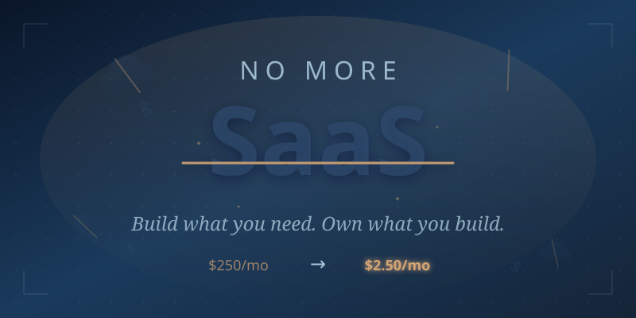

Scaling Your Talents

I grew up with HTML. I was on the internet before browsers, back when Gopher was how you found things and you navigated by typing commands into a black screen. So I've seen the cycles. I know what hype looks like. I also know what it looks like when something actually changes.
This weekend, something changed.
My daughter runs a small business. She was paying $250 a month for a booking platform that did most of what she needed and a bunch of stuff she didn't. Every month, $250. For a calendar with some forms attached to it. You know the one.
I sat down with Claude Code on Saturday morning. By Saturday afternoon I had a booking system built around her actual workflow. Her clients can book, she gets notifications, the calendar syncs. It works. Hosting runs about $2.50 a month.
Let me be clear about that. Two dollars and fifty cents. Down from two hundred and fifty. That's not an optimization. That's the whole math changing.
Here's the part that matters, though: I didn't learn anything new to build it. I've known HTML and CSS for thirty years. I know enough JavaScript to be dangerous and enough about how systems fit together to know what questions to ask. What I never had was a tool that could keep up with what I already understood. I'd have the whole system mapped in my head and then spend three weeks typing it into existence. The bottleneck was never the knowing. It was the building.
Saturday, that bottleneck disappeared. I described what I wanted. I watched it appear. I said "the confirmation email should include the cancellation policy" and thirty seconds later it did. I was working at the speed of what I know instead of the speed of what I can type. That feeling, I haven't had it since the first time I saw a web page load in 1994.
I'm not interested in the philosophical arguments about AI. Whether it's thinking, whether it's going to take jobs. The people having that conversation and the people building things with these tools don't seem to overlap much. What happened Saturday wasn't intelligence, artificial or otherwise. It was my thirty years of experience finally having something that could keep pace.
If you've spent years in any field learning how things actually work, these tools don't replace that knowledge. They make it worth more. The gap between "I know exactly what this should be" and "it exists now" used to be weeks, or a $250/month subscription to someone else's version of what you wanted. On Saturday that gap closed in my living room while I was still drinking coffee.
For thirty years we've been learning the machine's language. Its syntax, its menus, its preferences. Now it's learning ours. I don't know what that means for everything. But I know what it meant for my daughter's booking system, and I know the look on her face when I showed it to her.
If you want to see what your experience is actually worth now, come talk to us or find us in Discord.